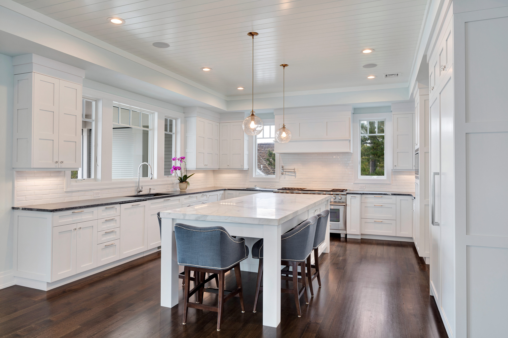

General Construction Contractor
Residential Renovations and Remodels

Cabinetry Installation

Tiling
- Conducted consultations with clients to discover and verify the scope of the client’s needs of a renovation
- Provided design input to help create the customer’s vision and ideas, when needed
- Created comprehensive itemized quotes and realistic timelines based on the client’s renovation requirements
- Executed renovation projects, including flooring, tiling, cabinetry installation, and others, based on client-approved quotes and designs
- Delivered quality craftsmanship while managing project timelines to ensure efficient completion within client’s budget and scope, resulting in projects completed to client satisfaction and repeat referrals
- Provided open communication with clients to establish and build trust, maintain expectations and satisfaction, and resolve unexpected problems
Other Contractor Projects
The Ritz-Carlton-Los Colinas:
The Omni Hotel-Los Colinas: